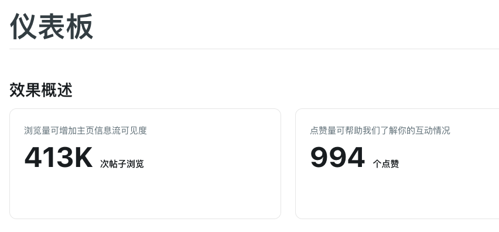
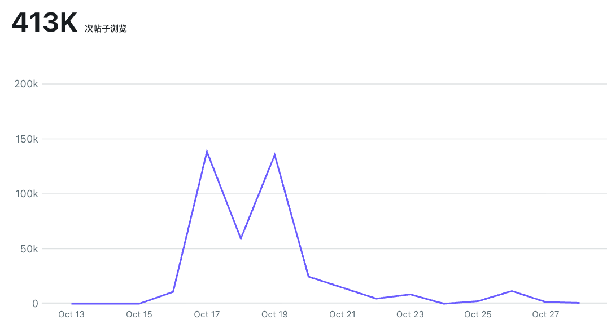
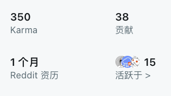
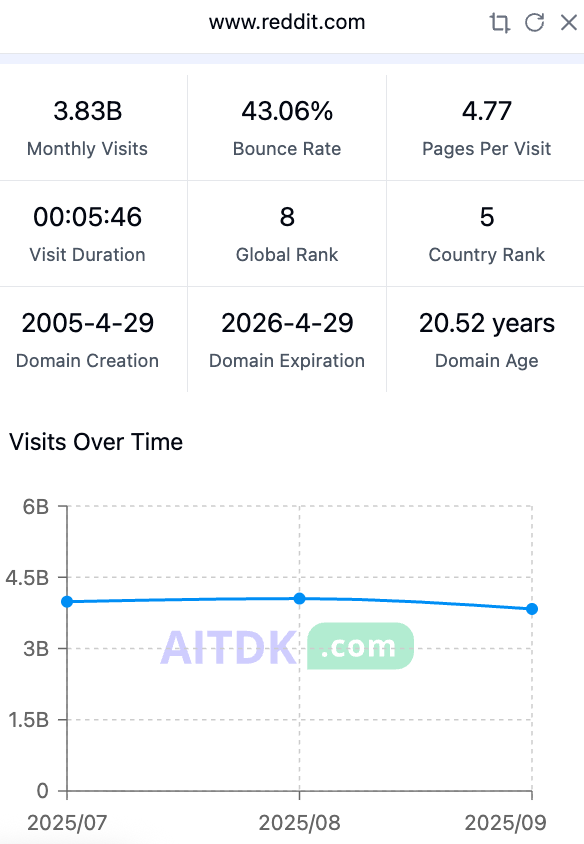

让我分享一个数据：我在10月初创建的Reddit新号，10月17-19号三天内，通过在不同subreddit发布爆款内容，Karma从0涨到350，获得413K曝光。


这不是运气，而是对Reddit底层逻辑的准确把握。
一、Reddit的反直觉增长路径
大多数人对社交平台的认知是：先积累粉丝，再获得流量。Reddit恰恰相反——它不依赖粉丝基础，优质内容可以直接获得海量曝光。
这种匿名机制的设计，本质上是一种内容价值的纯粹竞争。没有大V光环，没有粉丝加持，每一次曝光都是内容本身的胜利。
代价是什么？对垃圾内容零容忍。一旦内容质量下滑，社区会毫不留情地将你埋葬。这种严苛的筛选机制，反而成就了Reddit作为高质量流量源的地位。

二、被低估的40亿月活市场
Reddit月流量稳定在40亿左右，但大部分中文出海团队都在忽视这个渠道。原因很简单：
语言门槛筛选掉了大部分竞争者。 社区文化的复杂性提高了进入成本。 对内容质量的苛刻要求让批量操作失效。 中国大陆用户无法直接访问Reddit。
但这恰恰是机会所在。无论是产品推广、SEO/GEO布局，还是海外市场拓展，Reddit都是一个竞争密度低、转化质量高的价值洼地。

三、从实践到产品化的必然路径
基于大量踩坑经验和账号实操数据，我们正在开发一套Reddit自动化运营系统，核心解决两个问题：
前期养号阶段：通过Account Warmup策略，系统性快速积累Karma，建立账号权重。这不是简单的发帖，而是基于社区规律的精准运营。
中期营销阶段：当账号建立基础信任后，根据具体目标提供自动发帖、智能回复等功能。关键不是"自动"，而是"智能"——理解subreddit语境，符合平台调性。
四、真正的护城河是什么
工具只是效率的放大器，真正的护城河是对Reddit生态的深度理解：
哪些subreddit适合冷启动？ 什么时间发帖获得最大曝光？ 如何避免被判定为spam？ 怎样的内容能引发社区共鸣？
这些经验无法速成，只能通过实践积累。我们把这些经验产品化，是为了让更多人避免重复踩坑。
结语
Reddit不是一个可以投机取巧的平台，但它奖励真正理解规则并提供价值的玩家。如果你认同这种长期主义的运营理念，欢迎交流。
工具正式上线后将提供免费试用，感兴趣可以留言、私信或点击阅读原文加入waiting list。
我是Victor，X、B站、即刻、小红书请搜“Victor在西雅图”，专注于分享AI前沿、创业思路、产品研发。